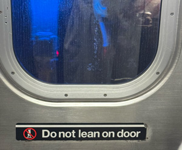
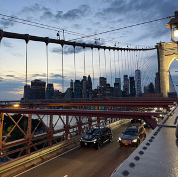

An Evening in Brooklyn
September 12, 2026
Queens → Kinjo → Brooklyn Bridge → Home
4:24 PM
Leaving Home
I took the subway from Queens to Brooklyn.
4:41 PM
Transfer
Waiting for the next train.

5:20 PM–6:20 PM
Kinjo Omakase
Before walking around Brooklyn, I stopped for dinner at Kinjo.
6:32 PM
Empire Fulton Ferry
After dinner, I started walking toward the waterfront and took some photos.
7:07 PM
Brooklyn Bridge
I reached the Brooklyn Bridge and started walking on it.

7:32 PM
Heading Home
After the walk, I headed back to the subway.
8:40 PM
Arrived Home
I arrived home and ended my evening in Brooklyn.